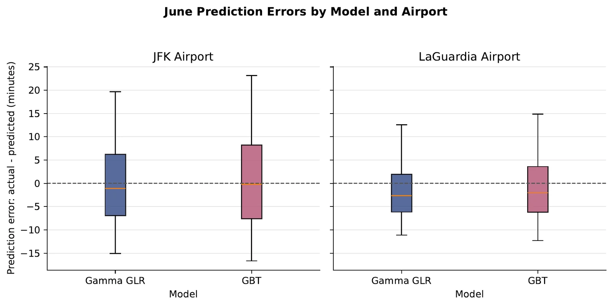
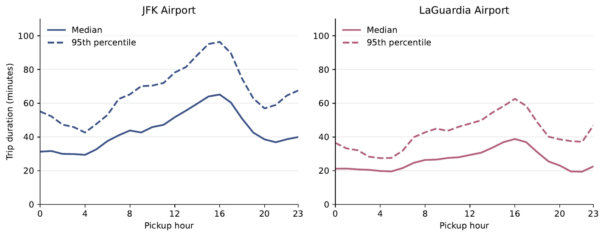
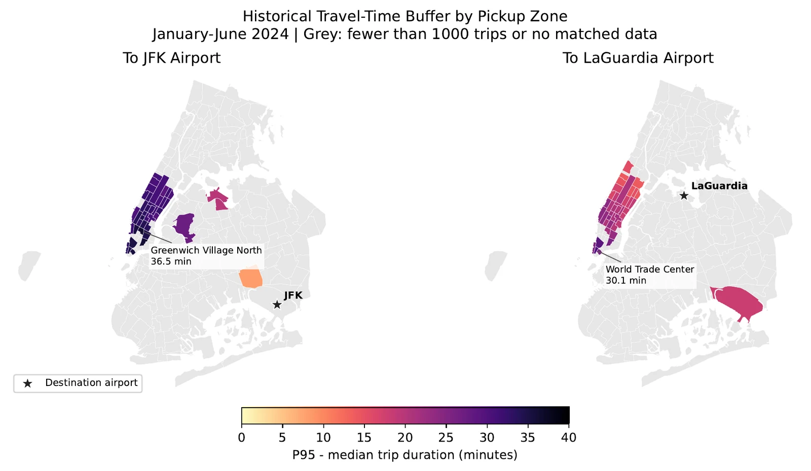
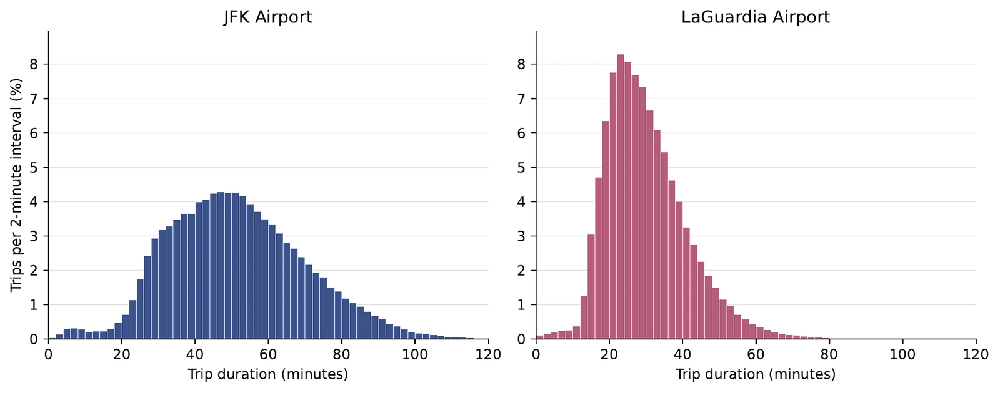

纽约机场出租车行程时间预测NYC airport taxi travel time
坐黄色出租车去 JFK 或 LaGuardia，应该预留多少时间？How much time should you allow when taking a yellow taxi to JFK or LaGuardia?
独立完成数据下载、PySpark 清洗与特征构建（时间、位置、NOAA 逐小时天气）、模型比较、误差分析和英文报告。I did the whole pipeline: download, PySpark cleaning and features (time, zone, hourly NOAA weather), model comparison, error analysis and the written report.
2024 年 6 月测试集误差（分钟，越低越好）June 2024 holdout error (minutes, lower is better)
R²：Gamma 0.732，梯度提升树 0.654。模型按月份扩展训练，6 月整月留出测试。R²: Gamma 0.732, GBT 0.654. Trained on an expanding monthly window; all of June held out.
6 月测试集预测误差（实际 − 预测，分钟）June holdout prediction error (actual − predicted, minutes)

两个机场里 Gamma 的误差箱体都比梯度提升树更窄，须线更短；JFK 的误差范围明显大于 LaGuardia。At both airports the Gamma model has a tighter box and shorter whiskers than GBT; JFK errors spread much wider than LaGuardia’s.
按上车时段的行程时长：中位数与第 95 百分位Trip duration by pickup hour: median and 95th percentile

两个机场都在下午 4 点前后最慢；JFK 此时第 95 百分位接近 100 分钟，中位数与 P95 的差距也最大。Both airports peak around 4 pm; at JFK the 95th percentile nears 100 minutes and the gap to the median is widest.
历史行程时间缓冲：天气 × 上车时段（分钟）Historical travel-time buffer: weather × pickup time (minutes)
各上车区域的历史缓冲（P95 − 中位数，2024 年 1–6 月）Historical buffer by pickup zone (P95 − median, Jan–Jun 2024)

去 JFK 缓冲最大的是 Greenwich Village North（36.5 分钟），去 LaGuardia 是 World Trade Center（30.1 分钟）。灰色区域行程少于 1,000 条或无匹配数据。The largest buffer to JFK is from Greenwich Village North (36.5 min); to LaGuardia, from World Trade Center (30.1 min). Grey zones had under 1,000 trips or no match.
行程时长分布（每 2 分钟区间的行程占比）Trip duration distribution (share of trips per 2-minute bin)

JFK 中位数 50.15 分钟、分布更宽；LaGuardia 中位数 28.35 分钟，集中在 15–50 分钟。JFK: median 50.15 min with a wide spread. LaGuardia: median 28.35 min, concentrated between 15 and 50 min.
去掉天气特征后，5 月验证集 MAE 上升（分钟）Removing weather features raises May validation MAE (minutes)
天气带来的提升不大但稳定，两个模型方向一致。Weather helps a little, consistently, in both models.
- PySpark
- Spark ML
- pandas
- GeoPandas
- Matplotlib